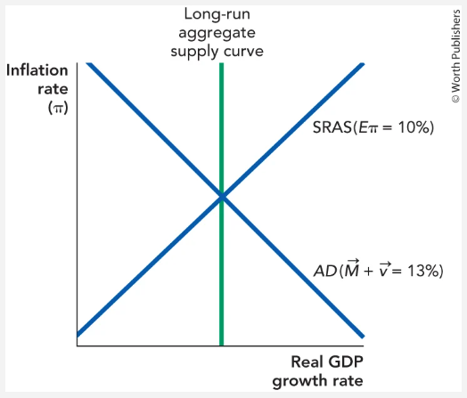
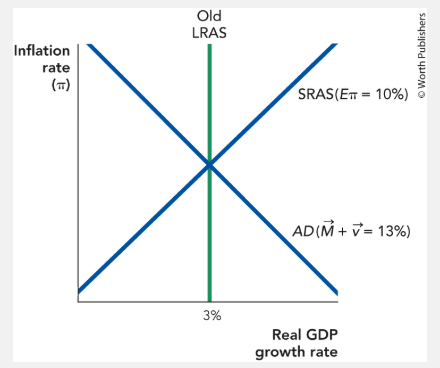

Bring SRAS back into the model and play the role of a central banker reacting to a rise in velocity growth. The diagram below shows the economy growing at the potential growth rate with 10% inflation.

When consumers and investors become more optimistic, the AD curve shifts to the right. In the quantity-theory framework this is equivalent to an increase in velocity \( \dot{v} \), raising nominal spending growth \( \dot{M} + \dot{v} \).
Key intuition: with expected inflation anchored at 10%, a positive demand shock moves the economy up and to the right along the SRAS, temporarily pushing real growth above potential and inflation above 10%.
To fully reverse the AD shock "just right," the central banker tightens monetary policy — reducing money growth \( \dot{M} \) by exactly enough to offset the increase in velocity \( \dot{v} \).
\[ \pi = 10\% \]
If the central banker perfectly offsets the velocity shock by reducing \( \dot{M} \) by the same amount that \( \dot{v} \) increased, nominal spending growth remains at 13%. The economy stays at the intersection of the original AD curve and the LRAS, and inflation remains exactly 10%.
Central bankers must manage expectations. Suppose inflation is running at 10% and the central banker would like to lower inflation to 2% without reducing real growth. Assume velocity shocks are zero and the potential growth rate is 3%.

From the quantity theory:
\[ \dot{M} + \dot{v} = \pi + g_Y \]
With \( \dot{v} = 0 \), potential growth \( g_Y^* = 3\% \), and target inflation \( \pi^* = 2\% \):
\[ \dot{M} = \pi^* + g_Y^* - \dot{v} = 2\% + 3\% - 0\% = 5\% \]
What the central banker should tell the public:
"We are committed to bringing inflation down to 2%. We will set money growth at 5% and maintain it. You should update your inflation expectations to 2%."
Mechanism: the central banker must credibly commit so the SRAS shifts down. If the public believes the announcement and lowers expected inflation to 2%, \( SRAS(E_\pi = 10\%) \) shifts down to \( SRAS(E_\pi = 2\%) \). The new equilibrium is
\[ \pi = 2\%, \quad g_Y = g_Y^* = 3\% \]
Real growth is preserved because the disinflation is costless when fully credible — the economy moves straight down along the LRAS rather than going through a costly recession.
Once expectations are anchored at 2%, the central banker has an incentive to deviate (time inconsistency):
Use the model of supply and demand for bank reserves to explain how the Federal Reserve can change aggregate demand in the short run. The Federal Reserve controls the supply of bank reserves; private banks create the demand for bank reserves. After a meeting, the Fed's Open Market Committee votes to cut interest rates from 2% to 1.5%.
To lower the federal funds rate, the Fed must increase the supply of reserves.
This will typically increase aggregate demand.